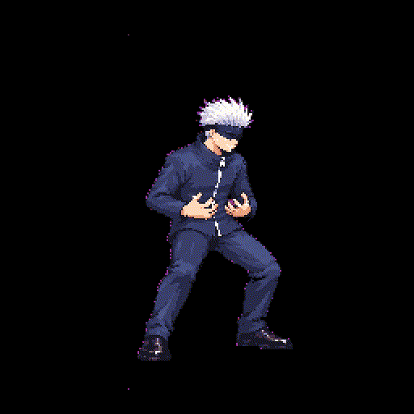
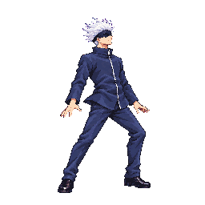
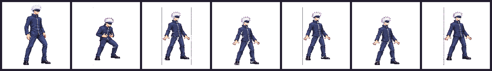
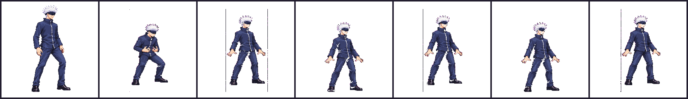
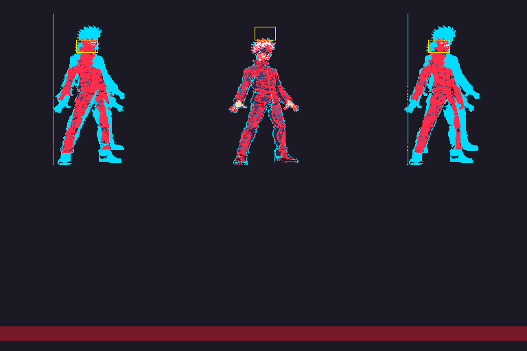
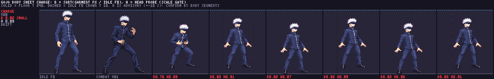
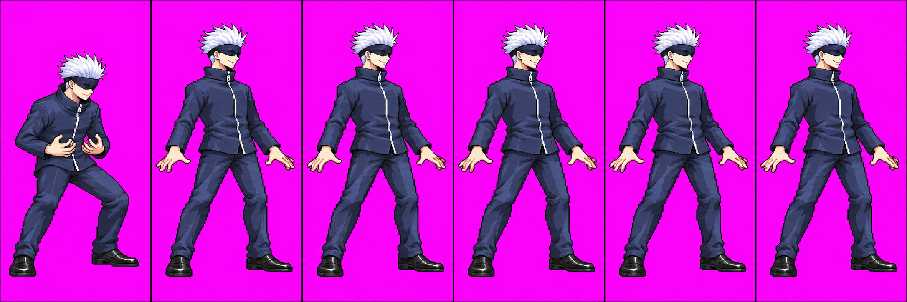

Candidate review · generated 2026-10-19 · three image calls used
Technical hold. The strict pack refused v08. The current game atlas remains approved v07. The preview GIF below shows diagnostic quantized cells; it does not mean v08 is packed into the game.
Animation at brief timing

v08 diagnostic cells at 70/90/110/110/110/110 ms; the held loop plays four times, then pauses.

Current approved v07 at its existing 50 ms timing.
Quantized cells and registration

Idle f0, then charge f0-f5 from the actual 48-color diagnostic atlas.

Same cells enlarged 2x with nearest-neighbor scaling.

Loop registration: cyan marks changed occupancy, red marks changed colors, yellow boxes mark the audit's head probe. The shaded lower band covers y220-240.

Body sheet; B is an advisory garment-area proxy, not direct limb measurement.
Candidate source

Unchanged source image. Packed cells above are the basis for the review.
Strict command: node tools/pack-sprites.mjs gojo --quantize 48 --keep-palette --no-writeback · exit 1. The warning-mode diagnostic pack is not a passing or shipping pack.